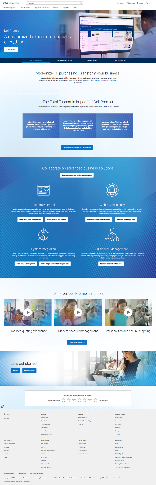

Dell Premier · Landing page
Dell Premier Landing Page Redesign
The Premier Landing Page is Dell’s public introduction to the Premier platform. I led the redesign so business customers could quickly understand what Premier offers and why it matters to them.

+2.8×
growth in new account submissions
+19%
increase in sign-ins
+70%
traffic to the page
00 — Problem
A landing page without a clear value story
Dell Premier lacked a clear brand identity and a consistent value proposition, which made it hard to attract new customers and build loyalty.
01 — Discovery
Competitors and customers
I ran a competitive analysis of 20+ companies, then reviewed internal and external qualitative research.
- Unique value: what is the unique value of Dell Premier compared with other competitors?
- Dell branding: users expect Premier to be the final layer of what Dell offers customers
- Customer-centric benefits: users want to know what they will get, not just what we offer


02 — Framing
What the page needed to do
Users wanted to quickly scan the content, and they needed shorter videos that get to the point.
- Design workshops: user flow, content strategy and framework, wireframes, hi-fi design and prototypes
- Unmoderated user testing: 3 rounds with SMB, large and enterprise customers


03 — Final design
A landing page that explains Premier quickly
The new Premier Landing Page makes it easier for customers to quickly understand Premier’s value. Clear, scannable benefits, an interactive Premier Tour, and data-driven impact stories help users see how Dell Premier can support their business.
With added FAQs to address common questions, we reduced uncertainty and helped customers onboard more confidently.

04 — Before and after
Before and after

Results
What changed
- +2.8× growth in new account submissions
- +19% increase in sign-ins
- +70% increase in traffic to the page
- Drove organic growth of B2B leads, serving as an acquisition channel for new business accounts